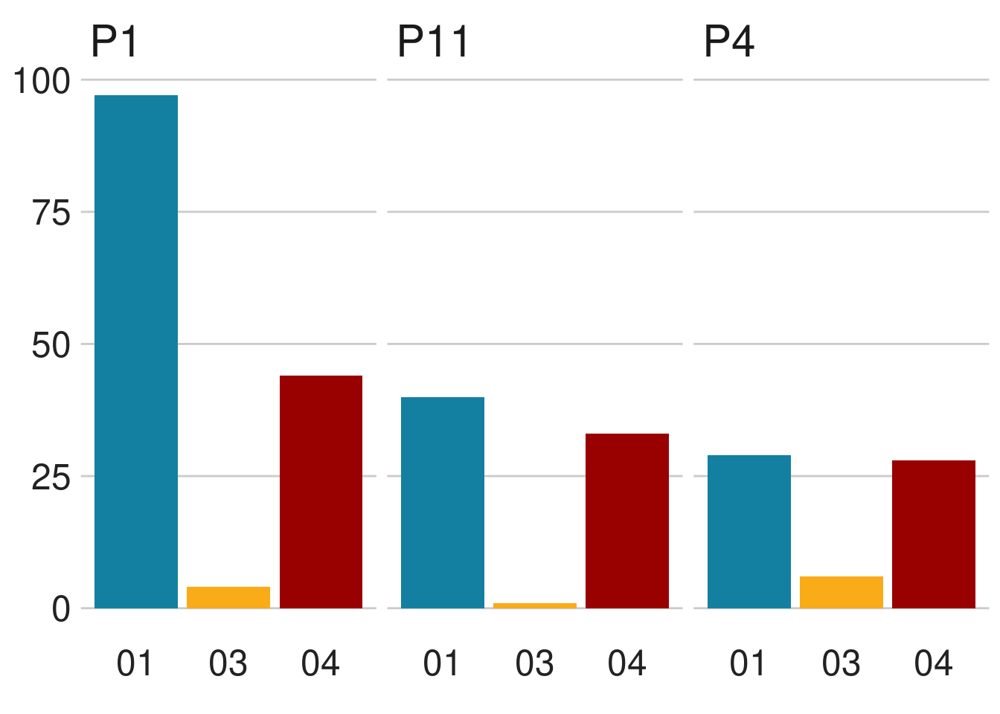
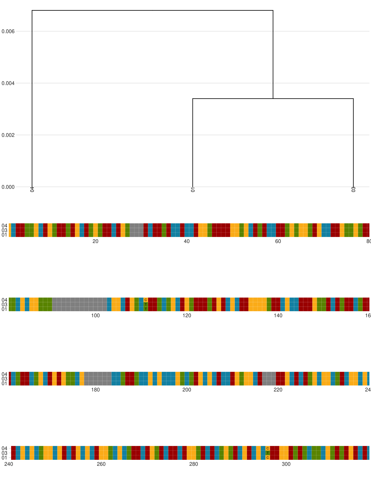
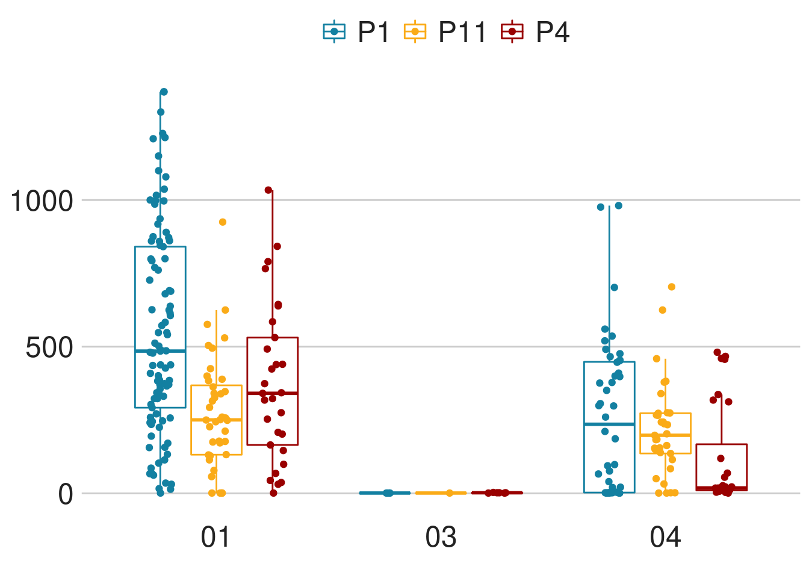

The group of IGHV1-18 includes 4 alleles, 4 out of the alleles are functional.
For each allele we counted the number of appearances across the population, any appearance was considered valid. # no cutoff applied

Based on the viewd alleles, we calculated the distance between the germline sequences.

To examine the potential cutoff we observed the sequence depth for each allele # fix jitter

We set an initial cutoff of \(0.5\%\) to determine the potential genotype priors. For this cutoff we examined the zygousity state, such as homozygousity, heterozygousity and so on.
With the selected cutoff we saw that there are 3 zygousity states.
This section is editable by clicking on the edit button below. To refresh the section click on the refresh button
You can access the file also from here
## [1] TRUEFrom the results we belive that the cutoff for this group should be closer to \(12.5\%\), and for the adjusted states the allele combinations and the relations are stated in the table below.